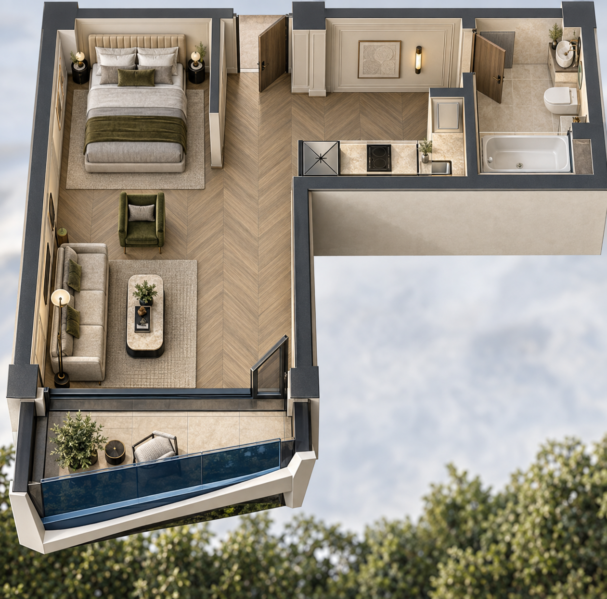
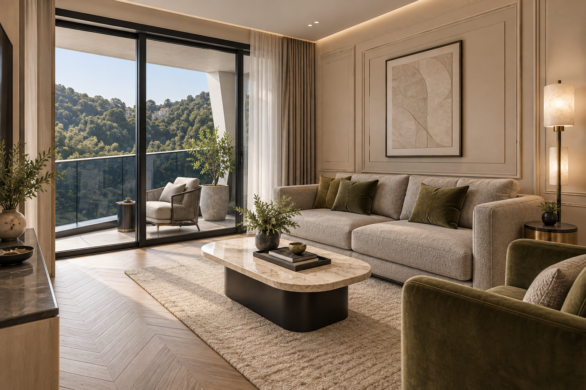
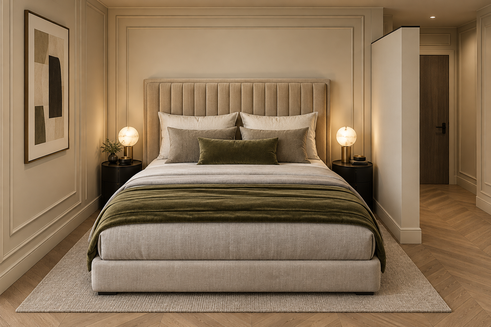
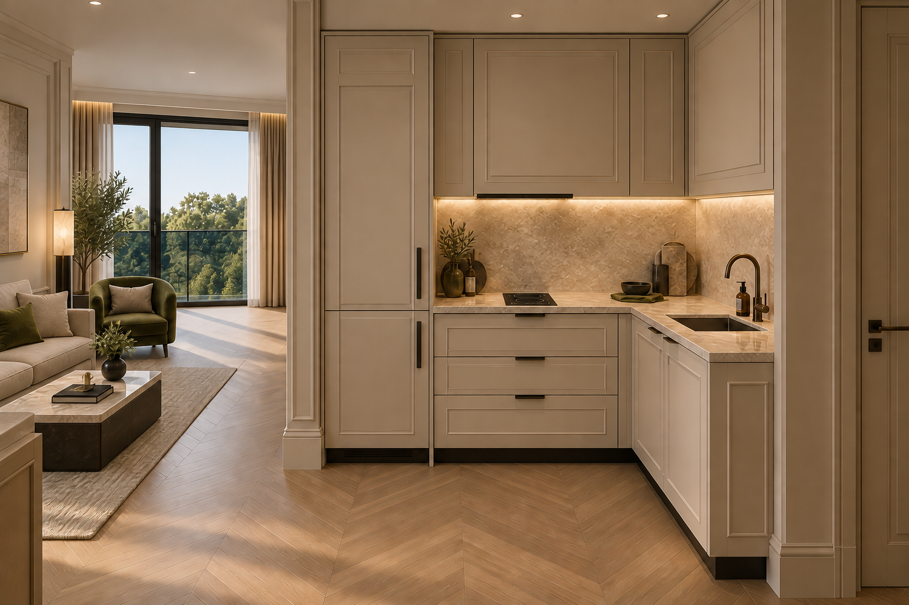
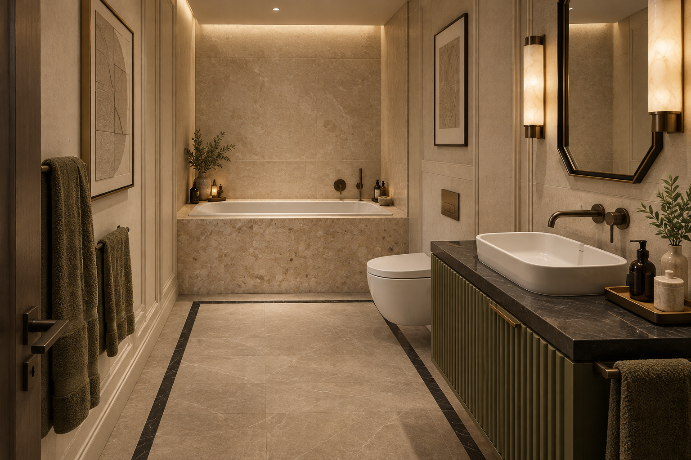

Ар-деко · Коллекция интерьеров
Квартира 35,7 м² / Концепция отделки / 2026Ар-деко в оливковых тонах
Бежевый камень, серый текстиль, чёрные детали и оливковый бархат. Пять визуализаций одной квартиры: от общего пространства до отделки санузла.
БежевыйСерыйЧёрныйОливковый

01 / Пространство целиком
Г-образная планировка и скошенный балкон

02 / Гостиная
Камень, бархат и мягкий дневной свет

03 / Спальная зона
Вертикальный ритм изголовья и свет алебастра

04 / Кухня
Бежевые фасады, каменный фартук и тёмная фурнитура

05 / Санузел
Оливковая тумба, геометрия зеркала и камень